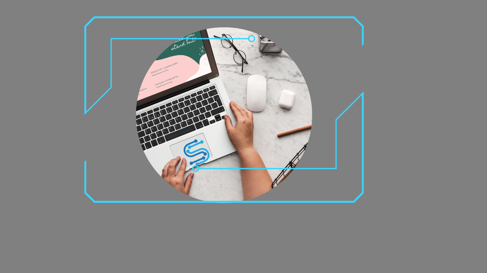

Diseño landing page
Presencia en Internet
Tu empresa o negocio tienen que estar online para que esté al alcance de tod@s. Para aumentar tu público y aumentar tus ventas tienes que estar en internet.
Si algo aprendimos durante estos tiempos es que tenemos que ser audaces a la hora de vender. Las formas tradicionales de ventas van quedando obsoletas.
Hoy es el tiempo de tener más alcance para estar en línea las 24 horas, que cualquiera pueda buscarte cuando lo desee. Tener tu web es eso. Es un hecho que puedes triplicar tus ventas y aumentar tus leads (futuros cliente).
Quizás estás acostumbrad@ a lo tradicional pero hoy es el momento de salir al mundo.
No te limites. Usa la tecnología a tu favor.
Creando una landing page podrás generar más impacto visual, brindar más seriedad y aumentar tus ventas a futuro si lo potencias con publicidad en redes sociales o buscadores. Te sugerimos para tener una página landing page de excelencia:
- Estructura: Ágil y sin distracciones.Ten en cuenta que es una sola página con informaciòn de tu negocio o empresa.
- Contenido: Imágenes atractivas y de buena calidad.
- Utiliza frases claras y sencillas.
- LLega al cliente. Evalúa cuál es tu valor. Que le darías a tus clientes y cómo mejorarias sus vidas.
- Utiliza botones que generen acciones.
- Acumula datos de calidad: Para generar futuros leads.
- Estos datos en el marketing valen oro, pide el nombre del cliente, su email y su teléfono móvil. Una forma muy útil es colocar un chat en donde los clientes dejen estos datos.
Beneficios de una landing page
Diseño Responsive (adaptable a todos los dispositivos)
Enlaces a redes sociales.
WhatsApp flotante.
Hosting gratis el primer año.
SSL gratis el primer año.
Dominio gratis el primer año.
Servicio de Correo profesional.
Alta en buscadores.
Presencia profesional en internet.
El diseño web profesional está destinado a todas aquellas personas que deseen obtener un sitio web más detallado para darse a conocer a todo el mundo.
¿A qué llamamos diseño web profesional? Llamamos diseño web profesional a ese servicio de calidad, apuntado a empresas o negocios, basado en nuestros años de experiencia en el mercado web con las últimas tecnologías digitales.
Existen numerosas formas de realizar una web, no es mi intención marearte con cada lenguaje de programación, simplemente sintetizar que una web puede ser creada desde cero con una maquetación previa o elegir una plantilla prediseñada que se ajuste a tu necesidad actual requerida. Tu web debe ser un espacio propio en donde puedas brindarle al mundo tu información de una forma clara y sencilla. Lo que buscamos en nexonube es que vos seas el dueño de tu sitio web profesional.
Los tipos de web varían en la necesidad de cada cliente pueden estar en el formato de HTML, CSS3, y todas son diseños web responsive (que se adaptan a todos los dispositivos)
Creando un diseño web profesional podrás aumentar tu tráfico online, brindar más seriedad y aumentar tus ventas a futuro, si lo potenciamos con publicidad en redes sociales o buscadores. Te sugerimos para tener una página web profesional de excelencia estos aspectos importantes en la elección de tu web:
-
- Elección adecuada: Elige una plantilla que te agrade y se adapte a lo que necesitas y buscas.
- Diseño gráfico de calidad: nos referimos al diseño gráfico de calidad a utilización de imágenes de calidad alta, libres de derecho o fotos profesionales.
- Utilización de colores y paleta de colores ajustado a tu elección.
- Lenguaje comprensible claro con orientación a SEO va a ser una palabra que vas a tener que investigar en el mercado online.
- Llega al cliente. Evalúa cuál es tu valor. Que le darías a tus clientes y cómo mejoramos sus vidas.
- Utiliza botones que generen acciones.
- Acumula datos de calidad: Para generar futuros leads. Estos datos en el marketing valen oro, pide el nombre del cliente, su email y su teléfono móvil. Una forma muy útil es colocar un chat en donde los clientes dejen estos datos.
Beneficios de tener un diseño web profesional
Diseño Responsive (adaptable a todos los dispositivos)
Enlaces a redes sociales.
WhatsApp flotante.
Hosting gratis el primer año.
SSL gratis el primer año.
Dominio gratis el primer año.
Servicio de Correo profesional.
Alta en buscadores.
Servicios adicionales y opcionales con costos extra: diseño gráfico, diseño de logo, diseño de manual de marca, diseño y elección de colores con paleta de colores a travès de nuestro equipo de diseñadores gráficos. Equipo de marketing y SEO. Equipo de publicidad en redes sociales. Equipo de publicidad especializada en Google ADS.